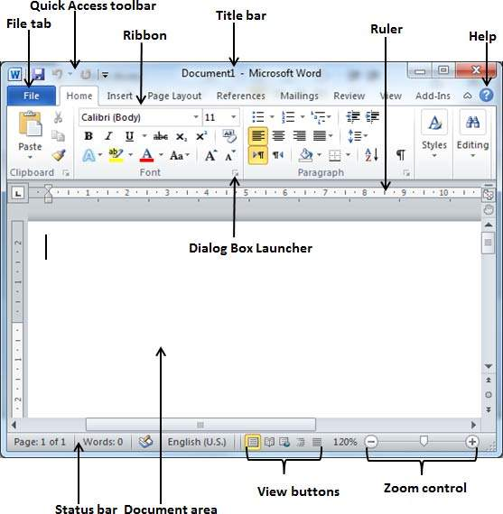
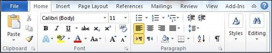

In this section, we will know how to explore Window in Word 2010. Resulting is the basic window which you get when you start the Word application. Let us know the various important parts of this window..

The File tab substitutes the Office button from Word 2007. You can click it to check the backstage view. This is where you come when you need to open or save files, create new documents, print a document, and do other file-related operations.
This you will find just above the File tab. This is a convenient resting place for the mostfrequently used commands in Word. You can customize this toolbar based on your comfort.

Ribbon carries commands organized into 3 components −
This lies in the center and at the top of the window. title bar suggests this system and document titles.
word has two rulers - a horizontal ruler and a vertical ruler. The horizontal ruler seems simply beneath the Ribbon and is used to set margins and tab stops. The vertical ruler appears on the left edge of the word window and is used to gauge the vertical role of elements on the page.
The help Icon can be used to get word associated help anytime you want. This affords fine tutorial on diverse subjects associated with the word.
Zoom control helps you to zoom in for a better look at your textual content. The zoom manipulate includes a slider that you can slide left or proper to zoom in or out; you could click on the + buttons to increase or decrease the zoom factor.
The group of 5 buttons placed to the left of the Zoom manages, near the bottom of the display, lets you turn via the word's various document perspectives.
That is the place in which you type. The flashing vertical bar is called the insertion factor and it represents the region wherein text will seem when you type.
This shows the report statistics in addition to the insertion point location. From left to proper, this bar incorporates the total number of pages and phrases inside the record, language, and many others.
You could configure the status bar by right-clicking anywhere on it and by deciding on or deselecting options from the provided list.
This seems as a very small arrow in the lower-right corner of many groups on the Ribbon. Clicking this button opens a dialog field or task pane that offers greater options about the group.